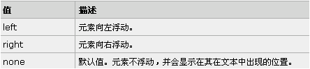

第十三节---定位的基本思想
定位的基本思想
CSS(Cascading Style Sheets) 定位 (Positioning) 属性允许你对元素进行定位
它允许你定义元素框相对于其正常位置应该出现的位置，或者相对于父元素、另一
个元素甚至浏览器窗口本身的位置。
<1> 块级元素: div、h1或p元素 即：显示为一块内容称之为 “块框“ ;
<2> 行内元素: span,strong,a等元素 即：内容显示在行中称 "行内框";
<3> 使用display属性改变成框的类型
即：display:block; 让行内元素设置为块级元素，display:none; 没有框
相对定位 - relative
相对定位：如果对一个元素进行相对定位，它将出现在它所在的位置上。
通过设置垂直或水平位置，让这个元素“相对于”它的起点进行移动
.adv_relative {
position: relative;
left: 30px;
top: 20px;
}
例如：
绝对定位 - absolute
绝对定位：元素的位置相对于最近的已定位祖先元素，如果元素没有已定位
的祖先元素，它的位置相对于最初的包含块。
.adv_absolute {
position: absolute;
left: 30px;
top: 20px;
}
例如：
浮动
CSS 浮动：float 属性定义元素在哪个方向浮动，
在 CSS 中，任何元素都可以浮动；

例如：
清除浮动
清除浮动之后可以将块级元素恢复成原来样式，默认会换一行下面是另外一个案例
如果两个div包含在另一个div里面，并且父级div有border，则，float之后就需要清除，
否则就会出现边界无法覆盖的情形
源码<div style="clear: both;"></div>
如下：